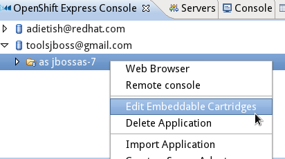

OpenShift Express Console
|
|
OpenShift Express Console
|
We reworked the whole UI for OpenShift in JBoss Tools 3.3.0 Beta1. What was a single wizard in M5 is now split up
into different parts with concise aims. The central entry point is now what we call the OpenShift Express console.

The OpenShift Express console will list your accounts and
applications. It allows you to manage your resources on the Red Hat
PaaS. Actions in the context menu allow you to create new users,
manage domains, applications, etc.
|
|
Properties
|
Details to the item selected in the OpenShift console are shown in the Properties view

Related Jira
|
|
Embedded cartridges
|
You may now add embed or remove cartridges from an existing application by choosing the appropriate
entry in the context menu. We now offer a separate wizard for that sake.


|
OpenShift Server
|
|
OpenShift Server Runtime |
You may now create the server adapter for an OpenShift
Express Application by choosing Create a Server Adapter in the
context menu of the OpenShift Express Console

You may now also create the server adapter like any other Eclipse WTP server adapter by invoking the new server wizard


The new OpenShift Server Adapter is not bound to JBoss AS7 any longer, it has it's own runtime.
The adapter may therefore now also publish to non-java applications.
Related Jira
|
|
Source & binary deployment |
The new OpenShift Server adapter is now able to publish source and binary artifacts.
When you create the adapter, you bind it to a project in your workspace.
He'll (git) push any changes in the source of this project and publish them to the OpenShift application.
That's what we call the source publishing mode.
Given a jbossas-7 application, you may also drag and drop projects to the adapter as
you always could with Eclipse WTP server adapters.
The adapter will build wars for these projects,
copy them to the deployments folder of your project (the project the adapter is bound to)
and push them to the OpenShift application. This is what we call the binary mode where binary artifacts
are pushed to the OpenShift git repository.
|
tr>